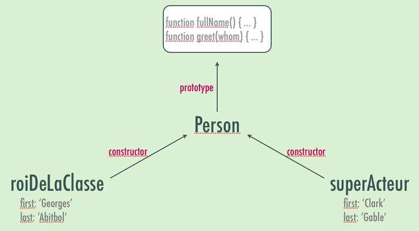
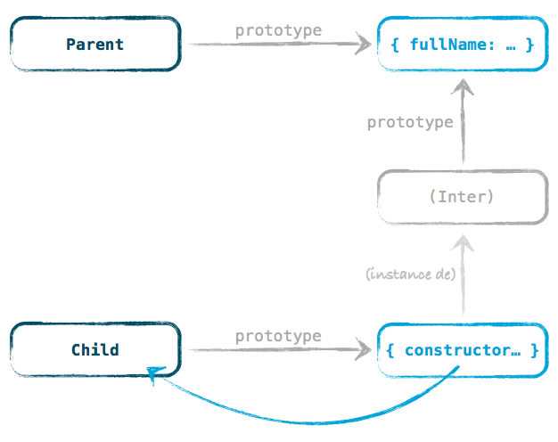

JS Total
1ère partie • 18/02/2014
Christophe Porteneuve @ JS Attitude
Les types, là, devant
Christophe Porteneuve
JS Attitude, Git Attitude, Delicious Insights
Paris Web, Prototype.js, script.aculo.us, Rails…
JS Total
4 journées du 18 au 21 février
- Aujourd’hui : JS, le langage pur
- Demain : Outils, DevTools, modules et templating
- Jeudi : développement d’une SPA complète
- Vendredi : industrialisation et web mobile
Apprendre à connaître
les types JS natifs
Objets
Hashes, maps et dictionaries…
var obj = { first: 'Christophe', last: 'Porteneuve', age: 36 };
obj.first // => 'Christophe'
obj['age'] // => 36
obj.first = 'Chris';
obj['first'] // => 'Chris'
obj[42] = 'yo';
obj[42] // => 'yo'
obj['42'] // => 'yo'
obj.42 // => SyntaxError
// Itération : for…in (tous JS), for each…in / forEach / map (JS 1.6),
// ou encore itérateurs / générateurs (JS 1.7) voire properties (JS 1.8.5).String
'déjà' < 'demain' // => false
'déjà'.localeCompare('demain') // => -1 ('déjà' avant 'demain' -> YEESSS!)
'déjà !'.toLocaleUpperCase() // => 'DÉJÀ !'
'ÇA POUTRE'.toLocaleLowerCase() // => 'ça poutre'
'one,two,three'.split(',') // => ['one', 'two', 'three']
'one,,two,three'.split(/\W+/) // => ['one', 'two', 'three']
'hello'.substring(1) // => 'ello'
'hello'.slice(1, -2) // => 'el' -> [1;length-2[Date (init/lecture)
new Date // Paf maintenant !
new Date(epochMS) // Désérialise depuis une représentation numérique
new Date(rfc2822) // <=> Date.parse(rfc2822)
new Date(y,m,d[,h,m,s,ms]) // Valeur découpée. Manquants à zéro.
date.getFullYear() // JAMAIS getYear, mécréants !
date.getMonth() // SALETÉ Java-like qui démarre à… zéro (janvier). Pfff…
date.getDay() // PERDUUUU ! C'est le DOW (Day Of Week), 0 = dim., 6 = s
date.getDate() // Le jour du mois. Super logique.
date.getHours()
date.getMinutes()
date.getSeconds()
date.getMilliseconds() // "Milliseconds", un seul mot : une seule initiale.
// Heure locale du navigateur/système. On a les mêmes en getUTCXxx()… Date (conversion)
// "J'ai juste lu la doc"
date.getTime() // => ex. 1392715517557
// "Je suis un gros r0xx0r qui lit le code de @thomasfuchs"
+date
// Et sinon…
new Date(1392715517557)
// Mais aussi (car souci pour partir de composantes UTC) :
Date.UTC(y, m, d, h, mn, s, ms) // => numérique
// Et pour maintenant, du plus long vers le plus court :
new Date().getTime()
Date.now() // Le plus rapide et le plus clean, mais IE9+
+new Date // Dans un shim de Date.now(), alors…Date (écriture ?)
// 1. Composantes -> Date : constructeur :
var y = 2014, m = 1, d = 18, h = 10, mn = 25, s = 17, ms = 557;
new Date(y, m, d, h, mn, s, ms);
// 2. Ajouter/retirer un temps donné. Plus fiable en mode numérique :
var THIRTY_DAYS = 30 * 24 * 60 * 60 * 1000;
var thirtyDaysFromNow = new Date(Date.now() + THIRTY_DAYS);Array (la base)
var names = ['Jean-François', 'Jordan', 'Lionel', 'Loïc', 'Matthieu', 'Nicolas',
'Pierre-Olivier', 'Rafik', 'Valentin', 'Yannick'];
names.length
// => 10. R/W : permet de réutiliser un tableau super-VITE !
names[0]
// => 'Jean-François'
names[12] = 'Christophe';
names.length
// => 13
names[10]
// => undefined (comme 11): "sparse array"Array (itération)
var data = [0, 1, 2, 3, 4, 5];
// SAYMAL™
for (var index = 0; index < data.length; index++)
doSomething(data[index]);
// SAYMIEU™
for (var index = 0, len = data.length; index < len; index++)
doSomething(data[index]);
// SAYTOP™ -- quoique : http://jsperf.com/prefix-or-postfix-increment
for (var index = 0, len = data.length; index < len; ++index)
doSomething(data[index]);Array (JS 1.6+)
// for…in itère sur LES PROPRIÉTÉS ÉNUMÉRABLES de N’IMPORTE QUEL OBJET
var arr = ['hello', 'world', , 'cool'];
for (var k in arr) console.log(k); // => 0, 1, 3
Array.prototype.etMerde = function etMerde() {};
for (var k in arr) console.log(k); // => 0, 1, 3, 'etMerde'
// Et JS < 1.8.5 ne nous laisse pas dire « extension non énumérable » :-/
// On fait comment pour un "sparse array" alors ?!
for (var index = 0, len = arr.length; index < len; ++index) {
if (!(index in arr)) continue; // Ah-ha !
console.log(index, arr[index]);
}Array (extraction)
var data = [1, 2, 3];
// arr1.concat(arg…) -> arr2 [déroule sur 1 niveau, ni "shallow" ni "deep"]
data.concat(4, 5, 6) // => [1, 2, 3, 4, 5, 6]
data.concat([4, 5, 6]) // => [1, 2, 3, 4, 5, 6]
data.concat(4, [5, 6]) // => [1, 2, 3, 4, 5, 6]
data.concat([4, [5, 6]]) // => [1, 2, 3, 4, [5, 6]] -- 2 niveaux !
data // => [1, 2, 3] -- intact !
// arr.join([sep = ',']) -> String
data.join() // => '1,2,3'
data.join('') // => '123' -- Fréquent en construisant du HTML
// arr1.slice(signedBegin[, signedEnd = length]) -> arr2 -- négatif ok partout !
data.slice(1) // => [2, 3]
data.slice(1, 1) // => []
data.slice(1, 2) // => [2]
data.slice(1, -1) // => [2]
data.slice(-2) // => [2, 3]
data.slice(-2, 2) // => [2]
data.slice(-2, -1) // => [2]Array (modifier)
var arr = ['one', 'two', 'three'];
arr.push('four'); // => 4
arr.push('five', 'six', 'seven'); // => 7
arr.pop() // => 'seven'
arr // => ['one', 'two', 'three', 'four', 'five', 'six']
arr.shift() // => 'one'
arr // => ['two', 'three', 'four', 'five', 'six']
arr.unshift('zero', 'one') // => 7
arr // => ['zero', 'one', 'two', 'three', 'four', 'five', 'six']
// splice(signedIndex, howManyToRemove[, replacingArg…])
// -- pas confondre avec slice !
arr.splice(0, 1) // => ['zero']
arr.splice(-2, 2) // => ['five', 'six']
arr.splice(0, 3, '3') // => ['one', 'two', 'three']
arr // => ['3', 'four']Array (généricité)
// Toi aussi, déguise-toi en tableau !
var fakeArray = { 0: '!', 1: 'ça torche', 2: 'JavaScript', length: 3 };
fakeArray.join = [].join; fakeArray.reverse = [].reverse;
fakeArray.reverse().join(' ');
// => 'JavaScript ça torche !'
// Ou alors :
fakeArray.__proto__ = Array.prototype;
fakeArray.reverse().join(' ');
// => 'JavaScript ça torche !'
// Méthodes « génériques » : concat, join, pop, push, reverse, shift,
// slice, sort, splice, toString, unshift.Je tue le chien si…
tu utilises bêtement new sur des natifs
new String(…)
new Array(…)
new Function(…)
new Boolean(…)
new Number(…)Aspects méconnus
== ou === ?!
42 == '42' // => true -- Argh, ça sent le PHP, là…
null == undefined // => true -- hmmm…
null == 0 // => false -- heureusement !
0 == undefined // => false -- heureusement !
0 == false // => true -- Façon C…
1 == true // => true -- Façon C…
42 == true // => false -- Watcha ?! (x == ToNumber(y), ES3 §11.9.3)
'0' == false // => true -- Woah !
'' == false // => true -- Yowza ! 8-O On y reviendra…
NaN == NaN // => false -- Bin oué, c’est le principe…
// avec ===, fini de jouer : vérif valeur ET TYPE !
42 === '42' // => false
null === undefined // => false
null === 0 // => false
0 === undefined // => false
0 === false // => false
'0' === false // => false
NaN === NaN // => false -- rien à faire !Le capitaine []
// Équivalence stricte statique / dynamique :
obj.x === obj['x']
// Trop La Lose
var angle = 60, result;
if (useSin)
result = Math.sin(angle);
else
result = Math.cos(angle);
// Moins La Lose
var angle = 60, result = useSin ? Math.sin(angle) : Math.cos(angle);
// Trop La Classe
var angle = 60, result = Math[useSin ? 'sin' : 'cos'](angle);
// Cas classiques (ici, méthodes appelées issues de Prototype) :
element[display ? 'show' : 'hide']();
element[(enable ? 'add' : 'remove') + 'Class']('enabled'); // too muchin et delete
var translator = { name: 'Christophe', langs: ['fr', 'en'] };
'name' in translator // => true
translator.age = 36;
'age' in translator // => true
translator.age = null;
'age' in translator // => true
delete translator.age
'age' in translator // => false
translator.age // => undefined
0 in translator.langs // => true
'0' in translator.langs // => true
translator.langs[3] = 'de';
2 in translator.langs // => false
3 in translator.langs // => true
delete translator.langs[3]
translator.langs // => ['fr', 'en', undefined, undefined]Truthy ou falsy?
Quand est-on dans le vrai ?
// 1. undefined, null, false, 0, '', NaN -> false
// 2. N'importe quoi d'autre -> true
'' || '(empty)' // => '(empty)' -- pensez aux valeurs de champs de formulaire…
function f(times) {
times = times || 3;
while (times--) console.log('yo');
}
f(4) // 4 fois 'yo' -- l’ataraxie me gagne.
f() // 3 fois 'yo' -- j’en suis tout coi de contentement.
f(0) // 3 fois 'yo' -- ventre saint-gris, je suis fait, vertuchou !
function f(times) {
if (undefined === times) times = 3; // 0 est valide…
while (times--) console.log('yo');
}
// Attention, juste '', pas une chaîne "100% whitespace !"
' \t\n ' ? 'Dommage Éliane' : 'Youpi' // => 'Dommage Éliane'parseInt, ce farceur
var segs = '18/02/2014'.split('/');
var d = parseInt(segs[0]), m = parseInt(segs[1]) - 1, y = parseInt(segs[2]);
new Date(y, m, d).toDateString() // => 'Tue Feb 18 2014'
// En environnement non-ES5+ (IE pre-9, Node pre-0.10, etc.)
segs = '27/09/2013'.split('/');
d = parseInt(segs[0]), m = parseInt(segs[1]) - 1, y = parseInt(segs[2]);
new Date(y, m, d).toDateString() // => 'Thu Dec 27 2012' -- MÉKÉKIDI !?
parseInt('09') // => 0 -- AAARGGGHHHH ! (avant ES5)
parseInt('09', 10) // => 9 -- Ben !?
// parseInt(str[, radix]) !WTFJS
// Les schyzophrènes sont parmi nous…
typeof NaN // => Number (!)
// Le parser n’est pas fini…
3.toFixed(4) // => SyntaxError
// Mais !
3..toFixed(4) // => '3.0000'
// Sinon, moins obscur :
(3).toFixed(4) // => '3.0000'
// Pas besoin sur les flottants -- Au fait, toujours '0.…', jamais '.…'
3.14159.toFixed(4) // => '3.1416'
// Les nombres qui avancent tout seuls…
9999999999999999 // => 10000000000000000
// De l'intérêt de comprendre les itérateurs ES5…
[10, 10, 10, 10, 10].map(parseInt) // => [10, NaN, 2, 3, 4]Constructeurs & Prototypes
Classe / Pas Classe
- « Les classes, c’est bourgeois » — @Mitternacht
- En JS on a que des objets
- Objet = fatras de propriétés
- Propriété = paire : nom + valeur
- Si la valeur est une fonction, on dit « méthode » !
Constructeurs
- Fonctions servant à initialiser un nouvel objet. Le nom du constructeur est un peu comme « le nom de la classe »…
- Toute fonction peut servir de constructeur : il suffit de l’appeler avec l’opérateur
new. - Elle dispose alors d’une variable implicite
this, qui représente la nouvelle « instance ». - L’objet créé référence son constructeur :
constructor.
Constructeurs
function Person(first, last) {
this.first = first;
this.last = last;
}
var roiDeLaClasse = new Person('Georges', 'Abitbol');
var superActeur = new Person('Clark', 'Gable');
roiDeLaClasse.first // => 'Georges'
superActeur.first // => 'Clark'Constructeurs

Constructeurs
Blindage
var boulet = Person('Vincent', 'Lagaf'); // => undefined
first; // => 'Vincent'
last; // => 'Lagaf'
// Solution :
function Person(first, last) {
if (!(this instanceof Person))
throw 'Et le new eh patate !';
// …
}Prototypes
- Tout constructeur a un prototype : un objet qui définit les propriétés (et donc méthodes) partagées par tous les objets que produit ce constructeur.
- Le prototype est « vivant » : si on le triture après l’appel au constructeur, ça marche quand même !
- Techniquement, y’a plein d’autres trucs dans un prototype (réf. au constructeur, gestion de propriétés…). Mais bon.
Prototypes
// On augmente l'existant…
Person.prototype.fullName = function fullName() {
return this.first + ' ' + this.last;
};
Person.prototype.greet = function greet() {
alert('Salut je m’appelle ' + this.first);
};
var luke = new Person('Mark', 'Hamill');
luke.fullName(); // => 'Mark Hamill'
// Rétroactif car lookup dynamique !
roiDeLaClasse.greet(); // 'Salut je m’appelle Georges'Prototypes
function extend(target, source) {
for (var prop in source)
target[prop] = source[prop];
return target;
}
extend(Person.prototype, {
fullName: function fullName() {
return this.first + ' ' + this.last;
},
greet: function greet() {
alert('Salut je m’appelle ' + this.first);
}
});
var john = new Person('John', 'Smith');
john.fullName() // => 'John Smith'
john.greet() // 'Salut je m’appelle John'Prototypes
Prototypes
// Et bien sûr, ça marche sur les types natifs !
Array.prototype.sum = function sum() {
var result = this[0];
for (var index = 1, len = this.length; index < len; ++index)
result += this[index];
return result;
};
[1, 2, 3, 4, 5, 6, 7, 8, 9, 10].sum() // => 55
Number.prototype.minutes = function minutes() {
return this * 60 * 1000;
};
Number.prototype.ago = function ago() {
return new Date(Date.now() - this);
};
new Date() // => Tue Nov 05 2013 11:18:56 GMT+0100 (CET)
(5).minutes().ago() // => Tue Nov 05 2013 11:13:56 GMT+0100 (CET)Functional Programming
Vocabulaire
-
Fonctions de premier ordre
- Les fonctions sont des valeurs comme les autres
- Ce sont même des objets (instances de
Function). Donc elles ont des méthodes (?!), des propriétés…
-
Fonctions d’ordre supérieur
- Une fonction peut prendre des fonctions en entrée (arguments) et en sortie (valeur de retour).
Bien déclarer
Déclaration ou expression ?
// SAYBOF™: Function Expression (fonction anonyme en fait)
var fx = function(a, b) { return a * b; };
// SAYMIEU™: Function Declaration
function fx(a, b) { return a * b; }
// Même si vous l'affectez par ailleurs…
var fx = function localFx(a, b) { return a * b; };
var obj = { fx: function fx(a, b) { return a * b; } };
// -> Named Function Expression (NFE)
// -> Micro-bugs dans JScript, Safari 2.x… Pas gênants en pratique.
// -> Le nom de la NFE n'est accessible que dans la fonction (récursion sans
// recourir à des quasi-hacks) et facilite le débogage.Bien déclarer
Hoisting des déclarations
var x = 42;
function x() { console.log('youpi'); }
x() // => TypeError: number is not a function// 1: Hoisting des déclarations de fonctions
function x() { console.log('youpi'); }
// 2: Hoisting des déclarations de variables
var x;
// 3: Déroulé des lignes de code
x = 42;
x(); // => ah bah oui, blam, forcément !Fonctions
Déclarations vs. expressions
var x = 42;
x = function() { console.log('youpi'); }
x(); // => ça marchePortée
// 1. TU DÉCLARERAS TOUJOURS TES VARIABLES LOCALES AVEC "var"
(function() { oops = 42; })();
oops // => 42
(function() { var shy = 42; })();
shy // => ReferenceError
// 2. LA PORTÉE D'UNE VARIABLE EST SA FONCTION ENGLOBANTE.
function demo() {
for (var index = 0, len = 42; index < len; ++index) {
// …
}
console.log(index, len); // => 42, 42
}
demo();
// JS 1.7 : "let" au lieu de "var" pour une portée de niveau blocMasquage
variable hiding
var outer = 'JS Custom', x = 'outer';
function fx() {
var x = 'inner';
console.log(outer, x);
};
fx(); // => JS Custom, inner
x // => 'outer'(incidemment, CoffeeScript nous évite cet écueil)
Closures
Fermetures lexicales
function publicFx() {
var stamp = Date.now();
return function() {
console.log(stamp);
};
}
stamp // ReferenceError
var privilegedFx1 = publicFx();
// Attendre un bref instant
var privilegedFx2 = publicFx();
// privilegedFx(1,2) sont en fait les fonctions internes construites au
// sein de publicFx, qui grâce aux règles de portée "voient"
// stamp. Elles sont *closed over* par publicFx, ce qui fait
// que les valeurs de stamp au moment où les fonctions ont été
// renvoyéees sont préservées en RAM tant qu'une référence (ici
// privilegedFx1/2) existe sur une fonction renvoyée.
privilegedFx1(); // => affiche le stamp d'alors !
privilegedFx2(); // => affiche le stamp d'après !
Closures
Fermetures lexicales
var publicFx = (function() {
var callCount = 0;
function publicFx() {
var stamp = Date.now();
return function() {
console.log(++callCount, stamp);
};
}
return publicFx;
})();
var privilegedFx1 = publicFx();
// Attendre un bref instant
var privilegedFx2 = publicFx();
privilegedFx1(); // => affiche 1 et le 1er stamp
privilegedFx1(); // => affiche 2 et le 1er stamp
privilegedFx2(); // => affiche 3 et le 2ème stamp
// etc.
Souci de closure…
for (var index = 0; index < 10; ++index)
setTimeout(function() { console.log(index); }, 0);
// => 10 x "10" :-(Solution :
for (var index = 0; index < 10; ++index)
(function(i) {
setTimeout(function() { console.log(i); }, 0);
})(index);
// => 0 -> 9 :-Dvarargs
Arguments dynamiques
// Les paramètres servent juste à nommer des arguments par position.
// Aucune contrainte quant à l'appel réel.
function showArgs(a, b, c) { console.log(a, b, c); }
showArgs(); // => undefined, undefined, undefined
showArgs(1); // => 1, undefined, undefined
showArgs(1, 2, 3, 4, 5); // => 1, 2, 3
// Toute fonction a une "variable locale" nommée arguments, qui
// est un "tableau générique" (tu te souviens ?).
function showArgs() {
for (var index = 0, len = arguments.length; index < len; ++index) {
console.log(index, " -> ", arguments[index]);
}
}
showArgs() // => Rien
showArgs('foo', 42, false) // => 0 -> foo // 1 -> 42 // 2 -> falseModule Pattern
var publicAPI = (function() {
// Ton code qui va bien ici
// Privé pour de vrai !
var myPrivateStuff;
function insiderCode() {
// J'ai accès aux trucs privés : fermeture lexicale !
}
// On publie en polluant le global…
oops = 'ah merde !';
// …voire explicitement…
window.oops = 'j’assume';
// …ou en retournant un truc récupéré par l'appelant
return { myPublicMethod: insiderCode };
})();Couplage explicite
// Pour l'import :
(function($) {
// Dans ce code, $ === jQuery.
// Peu importe qu'on soit en jQuery.noConflict() ou pas en-dehors…
// Et on dit explicitement : « j'utilise jQuery »
})(jQuery);
// Pour l'export :
(function(exports) {
function superCool() { … }
function uberCool() { … }
function privateStuff() { … }
exports.superCool = superCool;
exports.uberCool = uberCool;
})(window) // ou myNameSpace, ou ce qu'on veut…Loose augmentation
var MODULE = (function(mod) {
mod.extraFunc = function extraFunc(foo, bar) { … }
mod.yowzaCall = function yowzaCall() { … }
// Autres ajouts…
return mod;
})(MODULE || {});Cross-File Privacy
var MODULE = (function (mod) {
var _private = mod._private = mod._private || {},
_seal = mod._seal = mod._seal || function () {
delete mod._private;
delete mod._seal;
delete mod._unseal;
},
_unseal = mod._unseal = mod._unseal || function () {
mod._private = _private;
mod._seal = _seal;
mod._unseal = _unseal;
};
// Ici, accès permanent à _private, _seal, et _unseal
return mod;
}(MODULE || {}));http://www.adequatelygood.com/2010/3/JavaScript-Module-Pattern-In-Depth
Le piège du binding
var name = 'X';
var obj = {
name: 'Christophe',
greet: function greet(whom) {
console.log(this.name + ' salue ' + whom);
},
greetAll: function greetAll(first, second, last) {
[first, second, last].forEach(this.greet);
}
};
obj.greet("l’atelier JS Total !");
// => 'Christophe salut l’atelier JS Total !'
var fx = obj.greet;
fx("l’atelier") // => 'X salue l’atelier'
obj.greetAll('Mark', 'Suzy'); // => 'X salue Mark', 'X salue Suzy'
// http://www.alistapart.com/articles/getoutbindingsituations/Donc on fait comment ?
// 1ère approche, légère, sympa : tirer parti de
// la fermeture lexicale (si on peut)
var obj = {
// …
greetAll: function greetAll(first, second, last) {
var that = this;
[first, second, last].forEach(function(name) {
that.greet(name);
});
}
}Donc on fait comment ?
Incidemment, en ES5/jQuery/Prototype…
var obj = {
// …
greetAll: function greetAll(first, second, last) {
[first, second, last].forEach(this.greet, this);
}
}apply & call
// fx.call(ctx[, arg1[, arg2…]])
var fx = obj.greet;
fx.call(obj, 'l’atelier') // => 'Christophe salue l’atelier'
var x = { 0: 'Zero', 1: 'One', length: 2 };
Array.prototype.join.call(x, '-') // 'Zero-One'
// fx.apply(ctx[, argArray]) -- Gros potentiel d’astuces !
fx.apply(obj, ['l’atelier']) // => 'Christophe salue l’atelier'
Array.prototype.push.apply(x, ['Two', 'Three', 'Four']) // => 5
x // => { 0: 'Zero', 1: 'One', 2: 'Two', 3: 'Three', 4: 'Four', length: 5 }Garantir le binding
Function.prototype.bind = function bind(context) {
var f = this;
return function() {
return f.apply(context, arguments);
};
};
var fx = obj.greet.bind(obj);
fx("l’atelier") // => 'Christophe salue l’atelier'Throttling
Function.prototype.throttle = function(minInterval) {
var fx = this, lastCall = 0;
return function() {
if (Date.now() - lastCall < minInterval)
return;
lastCall = Date.now();
return fx.apply(this, arguments);
};
};
function sayHi() { console.log(Date.now(), "Hiiiii…"); }
console.log(Date.now());
hiCoquine = setInterval(sayHi.throttle(1000), 100);
setTimeout(function() { clearInterval(hiCoquine); }, 10000);Négation / Inversion
Function.prototype.negate = function negate() {
var fx = this;
return function() { return -fx.apply(this, arguments); };
}
function locComp(s1, s2) { return s1.localeCompare(s2); }
var names = ['Élodie', 'christophe', 'Stéphane', 'Sébastien'];
names.sort(locComp);
// => ["christophe", "Élodie", "Sébastien", "Stéphane"]
names.sort(locComp.negate());
// => ["Stéphane", "Sébastien", "Élodie", "christophe"]
// -> Plus efficace qu’un sort(locComp).reverse()
// On peut imaginer invert: return !fx.apply(this, arguments)
// -> Pratique pour des prédicats complexes qu'on veut juste inverser…String#toFx
Ruby Envy
String.prototype.toFx = function toFx() {
var fxName = this;
return function(self) { return self[fxName](); };
};
// Avant :
'hello'.replace(/[aeiou]+/g, function(vowels) {
return vowels.toUpperCase();
})
// Après :
'hello'.replace(/[aeiou]+/g, 'toUpperCase'.toFx())String#toFx
Ruby Beat
String.prototype.toFx = function toFx() {
var fxName = this, args = arguments;
return function(self) { return self[fxName].apply(self, args); };
};
// Avant :
'hello world this is nice'.replace(/\w+/g, function(word) {
return word.substring(1, 3);
})
// Après :
'hello world this is nice'.replace(/\w+/g, 'substring'.toFx(1, 3))Pas sur prototype ?
Une question d’esthétique
function strToFx(fxName) {
var args = Array.prototype.slice.call(arguments, 1);
return function(self) { return self[fxName].apply(self, args); };
};
'hello world this is nice'.replace(/\w+/g, strToFx('substring', 1, 3))Héritage prototypal
Héritage prototypal
-
JS fait partie des langages à prototype… ceux-ci peuvent « hériter » les uns des autres :
- tout objet a un prototype (celui de son constructeur)…
- …mais tout prototype est un objet…
- …GNI! (brainfreeze)
- Y’a plusieurs manières, aux conséquences distinctes
Héritage prototypal
function Person() { this.race = 'human'; }
function Geek() { this.language = 'js'; }
// Héritage prototypal « académique »
Geek.prototype = new Person();
var brendon = new Geek();
brendon.race // => 'human'
// Comment différencier entre propriétés « directes »
// et propriétés « héritées »
brendon.hasOwnProperty('language') // => true
brendon.hasOwnProperty('race') // => false
// Override:
brendon.race = 'vegetable'
brendon.race // => 'vegetable'
delete brendon.race;
brendon.race // => 'human'Héritage prototypal
// En revanche, on a pété un truc…
brendon.constructor === Geek // => false
brendon.constructor === Person // => true
// Trop facile à réparer, ceci dit :
Geek.prototype.constructor = Geek;
// Examiner tout ça :
var hubert = new Person();
Person.prototype.isPrototypeOf(hubert) // => true
Person.prototype.isPrototypeOf(brendon) // => true
Geek.prototype.isPrototypeOf(hubert) // => false
Geek.prototype.isPrototypeOf(brendon) // => true
// Ou en plus lisible :
hubert instanceof Person // => true
brendon instanceof Person // => true
hubert instanceof Geek // => false
brendon instanceof Geek // => trueHéritage prototypal
// => Potentiellement oui, mais où est le piège ?
Geek.prototype = Person.prototype;
// Beaucoup mieux ; l'option préférée par les frameworks
function inherit(Child, Parent) {
var Inter = function() {};
Inter.prototype = Parent.prototype;
Child.prototype = new Inter();
Child.prototype.constructor = Child;
}
inherit(Geek, Person); Héritage prototypal

Héritage prototypal
// Ou alors on confond héritage et recopie… Où est le piège ?
function extend(target, source) {
for (var prop in source)
target[prop] = source[prop];
return target;
}
function inherit(Child, Parent) {
extend(Child.prototype, Parent.prototype);
}
// …mais quels seraient les utilisations cool d'extend ?Mixins
var WebDevSkills = {
preferredMarkup: 'HTML5',
preferredStyling: 'CSS3',
attendParisWeb: function attendParisWeb() { /* … */ },
slicePSD: function slicePSD() { /* … */ }
};
extend(Geek.prototype, WebDevSkills);
brendon.slicePSD() // => …
brendon.preferredMarkup // => 'HTML5'Comprendre autrement
static / instance
- Si c’est au niveau du constructeur, c’est un membre « statique » ou « de classe »
- Si c’est au niveau du prototype du constructeur, c’est un membre « d’instance » (sensible à l’état de chaque objet)
À suivre…
Plein de trucs cool
Outillage, méthodologie et écosystème
- Éditeurs, JSHint/Lint, beautifiers, préprocesseurs…
- Débogueurs, consoles et panneaux avancés
- Déterminer les API exploitables ; Modernizr, shims, etc.
- Organisation en modules ; packaging, chargement
- Templating
- Frameworks MVC, du basique au full-stack
- Brunch.io et Yeoman
- Socle de la SPA, archi du code, étapes de développement